SESSION 04 · 수집과 제작
동네 산책 →
웹으로 진 만들기
신흥동행정복지센터 2층 · 14:00 – 16:00
RECAP · 지난 시간 돌아보기
지난 3차시에
우리는 이렇게 했어요.
- 01사진첩에서 마음 가는 사진 3장 고르기
- 02조각마다 물음표(?)와 느낌표(!) 붙이기
- 03모아 보고 싶은 방법에 ○, 딱 하나에 ★
- 04내 책 8쪽 그리기와 산책 미션 카드
아무것도 아닌 것을 특별한 것으로!
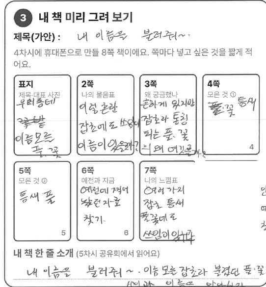
RECAP · 우리가 고른 ★
34명이 가장 해 보고 싶은 것.
같은 ★끼리 한 길을 걸어요. 테이블 번호 = 길 번호!
RECAP · 우리가 쓴 미션 카드
오늘 이 카드를
들고 나가요.
들고 나갈 물음표 하나,
꼭 찾아올 것 두 가지.
카드가 없으면 퍼실리테이터에게 말씀하세요.
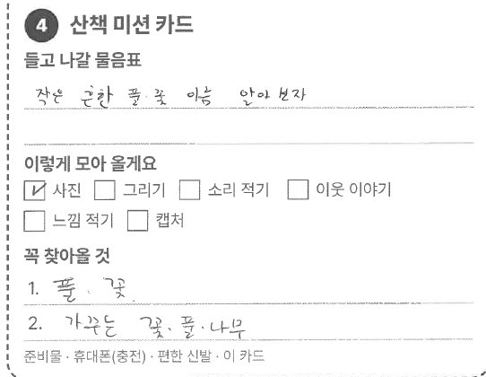
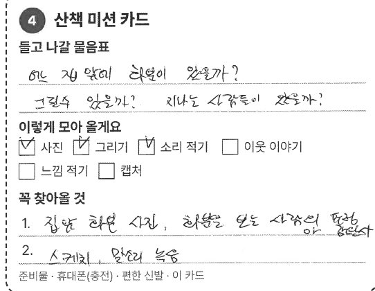
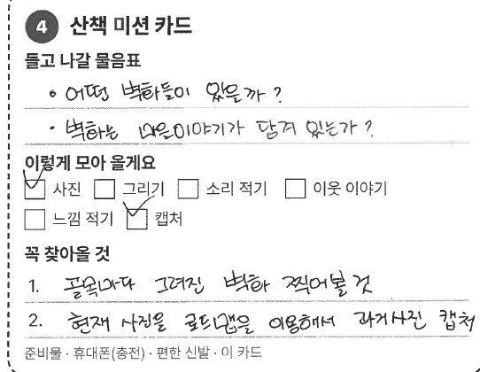
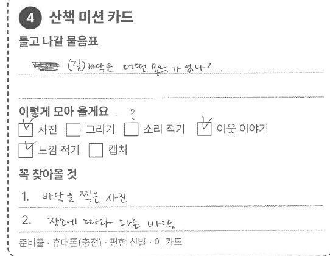
RECAP · 우리가 그린 내 책
오늘 이 계획을 웹 진으로 채워요.
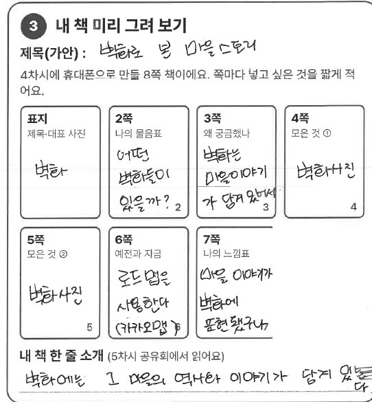
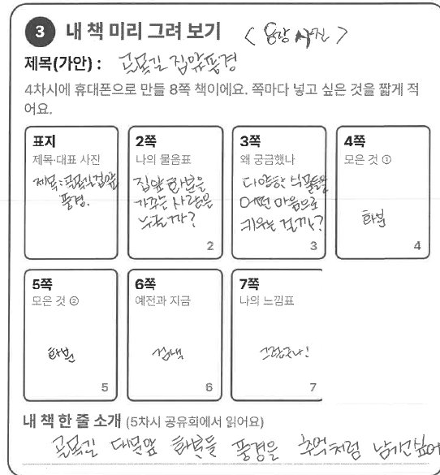
TODAY · 오늘 할 일
오늘은 이렇게 해요.
- ①지난 시간 돌아보기 · 미션 카드 읽기10분
- ②동네 산책 · 테이블마다 한 길40분
- ③돌아와 쉬기 · 사진 8장 고르기10분
- ④휴대폰으로 웹 진 만들기50분
- ⑤서로 넘겨 보기 · 다 만들었어요10분
2시간 · 신흥동행정복지센터 2층
GOAL · 학습목표
오늘이 끝나면
이렇게 할 수 있어요.
- 01미션 카드를 들고 동네를 걸으며, 내가 고른 방법으로 기록을 모아요.
- 02휴대폰으로 사진·자막·스티커를 넣어 8쪽 웹 진을 만들어요.
- 03옆 분 책을 넘겨 보고 좋은 점 한 가지를 말해요.
READY · 출발 준비
미션 카드를
소리 내어 읽어요.
걸을 길과 돌아올 시간은 퍼실리테이터가 알려 드려요.
출발 전에 화장실 다녀오기.
길이 힘들면 언제든 말씀하세요.
SAFETY
안전하게,
예의 있게.
- 01차도 옆·횡단보도에서는 휴대폰을 넣고 걸어요
- 02얼굴이 나오는 사진은 꼭 허락받아요
- 03소리는 녹음 대신 들린 그대로 글로 적어요
- 04힘들면 바로 쉬어요
WALK · 동네 산책
미션 카드 들고
동네 한 바퀴.
사진 · 소리 적기 · 그리기 · 이웃 이야기
"안녕하세요. 동네 기록 수업을 듣고 있어요.
이 동네 이야기를 한 가지 들어도 될까요?"

PICK · 사진 고르기
사진 8장 이내
고르기.
물 한 잔 마시고, 사진첩에서 마음에 든 사진을 골라요.
많으면 "이건 꼭" 하는 것만 남겨요.
WEB ZINE
휴대폰으로
웹 진 만들기.
카카오톡 말고 Safari(아이폰) · Chrome(안드로이드)에서 열어요.
EXAMPLE · 예시 진 3권
이런 책을 만들어 봐요.
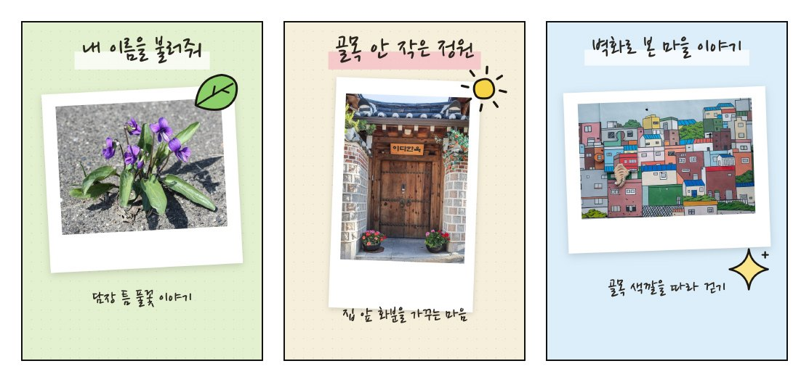
EXAMPLE 1/3 · 틈새 풀꽃 · → 를 누르면 책장이 넘어가요
「내 이름을 불러줘」
- ?
- 담장 밑 이 풀꽃, 이름이 뭘까?
- !
- 이름을 알면 길이 달라 보이는구나!
2번 금봉산 아랫길에서 풀꽃을 모아요
EXAMPLE 2/3 · 집 앞 화분
「골목 안 작은 정원」
- ?
- 이 화분은 누가, 언제부터 가꿨을까?
- !
- 화분은 이웃에게 건네는 인사였구나!
5번 철길 옆 골목에서 화분을 모아요
EXAMPLE 3/3 · 골목 색깔 · 벽화
「벽화로 본 마을 이야기」
- ?
- 왜 이 벽에 그림을 그렸을까?
- !
- 벽화에는 마을 사람들의 바람이 담겨 있구나!
3번 송정동초 담장길에서 색깔을 모아요
WEB ZINE · 1 / 8
입장.
이름 + 숫자 4자리 → 들어가기
이름과 숫자는 종이에 적어 두세요. 은행 비밀번호와는 다르게!
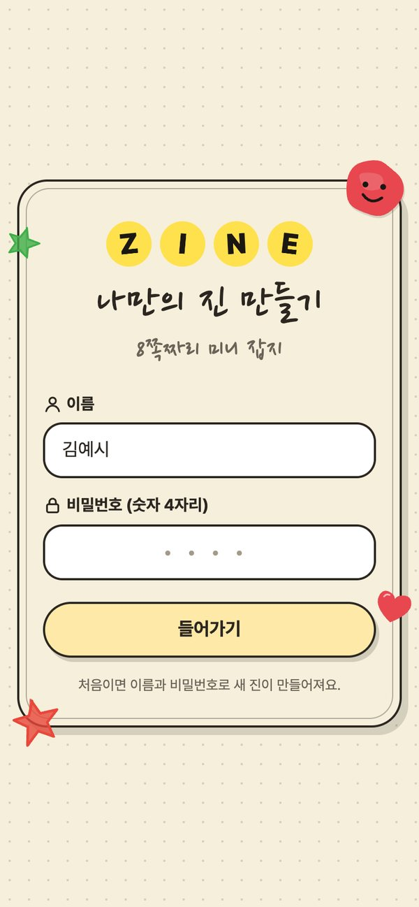
WEB ZINE · 2 / 8
쪽 고르기.
위쪽 1~8쪽 중 만들 쪽을 눌러요.
순서대로 해도, 마음 가는 쪽부터 해도 돼요.
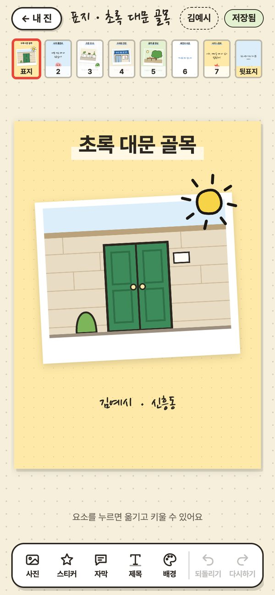
WEB ZINE · 3 / 8
사진 넣고
자르기.
아래 사진 → 사진첩에서 고르기.
올라온 사진을 눌러 자르기로 필요한 부분만 남겨요.
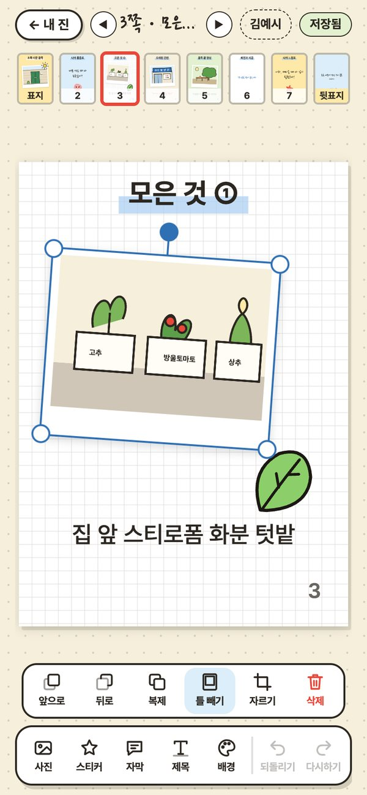
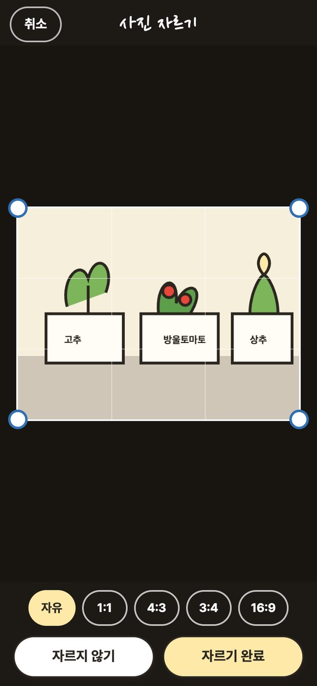
WEB ZINE · 4 / 8
스티커.
스티커 탭에서 골라 붙여요.
만들기 탭에서는 내 사진을 손가락으로 따라 그려 오릴 수 있어요.
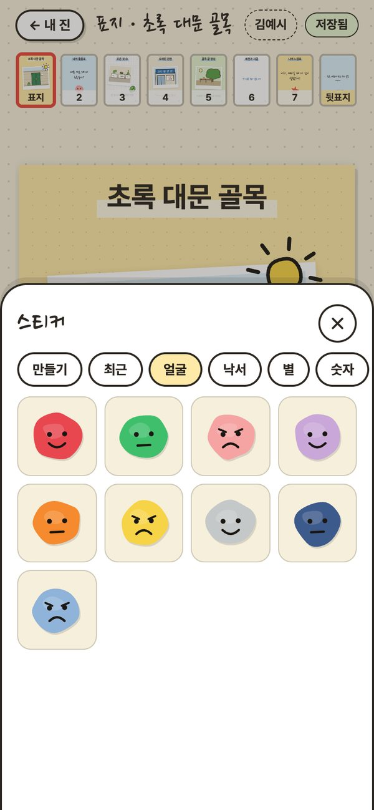
WEB ZINE · 5 / 8
자막 · 제목.
자막으로 사진 설명을, 제목으로 쪽 제목을 써요.
글꼴은 기본 · 손글씨 · 명조. 제목은 두 줄까지, 형광펜은 빼도 돼요.
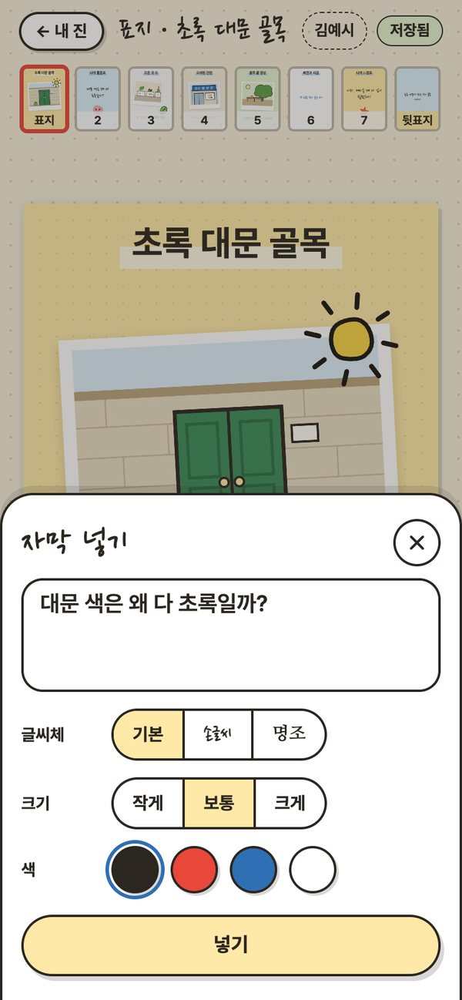
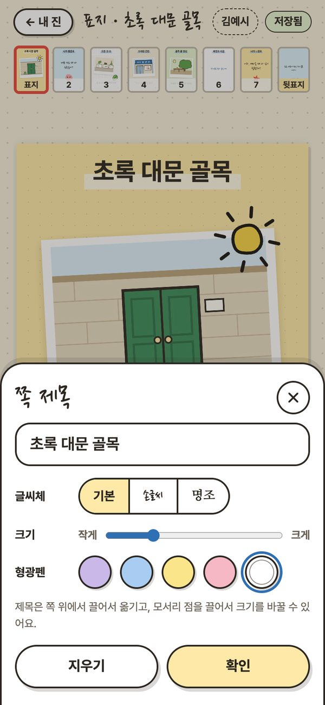
WEB ZINE · 6 / 8
표지 · 뒷표지
틀 넣기.
표지나 뒷표지에서 배경 → 틀 → A · 큰 제목 틀 넣기.
큰 제목 두 줄, 첫 사진, "이름 지음"이 한 번에 놓여요.
뒷표지에는 만든 사람 · 만든 날 · 한 줄 소개가 들어가요.
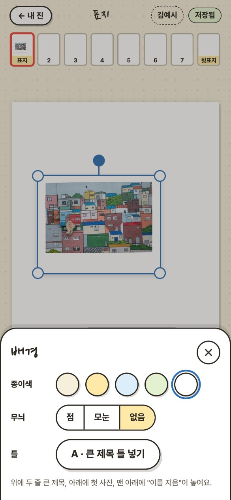
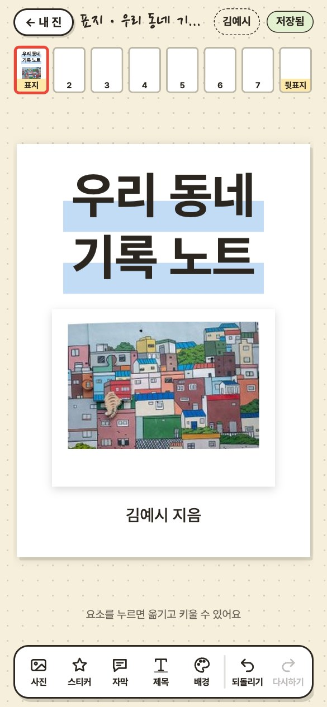
WEB ZINE · 7 / 8
쪽 순서
바꾸기.
위쪽 작은 쪽 그림을 꾹 누른 채 옆으로 끌어 옮겨요.
◀ ▶ 단추로도 바꿀 수 있어요. 표지와 뒷표지는 그 자리에 있어요.
WEB ZINE · 8 / 8
다 만들었어요.
"← 내 진"에서 책처럼 넘겨 보고, 다 만들었어요를 눌러요.
누른 뒤에도 계속 고칠 수 있어요.
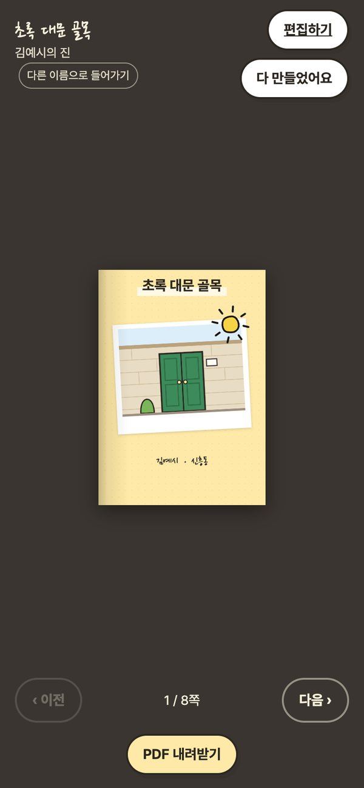
SHARE · 서로 넘겨 보기
옆 분 책
한 권 넘겨 보기.
휴대폰을 바꿔 보고, 마음에 든 쪽을 말해 주세요.
좋은 점 하나씩!

NEXT TIME
다음 시간엔
내 책이 나와요.
A3 한 장으로 출력해서, 접어서 8쪽 책을 만들어요.
5차시 · 신흥동행정복지센터 2층